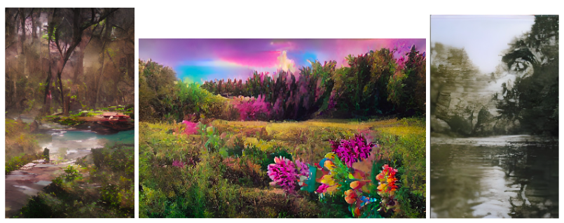

XXX.
Khali and Mars took me on a hike in a wooded area called TheNarrows™. Mars was helping Khali work on some global eduProjekt, where you explored wooded preserves and attempted to identify every single species extant there. I helped, as we scurried along, stopping here and there, turning over rocks, and witnessing non-chordata scurry every which direction.
“I’ve tried to warn Marissa about that Chavez household,” Khali said. “They all are mentally deranged narcissists.”
“Not true,” Mars said. “You told me that Hector was an abuser and that he learned to be an abuser through a defense-mechanism developed to deal with his mentally disturbed mother with EmotionallyUnstablePersonalityDisorder. You never said anything about any of Hector’s brothers.”
“Anyhow, I’m thinking about following your lead and just becoming a lesbian,” Khali said.
Mars rolled her eyes.
“By the way,” Khali said, “Xiander, do you like Mars’ new hairdo?”
As I noticed at the Bounce!™ show, MarsBar shaved her head at some point.
“Looks pretty cool,” I said. “Nice to have short hair in the summer.”
“Do you think she’ll have a better chance of landing some [redacted]?” Khali asked.
Mars punched her in the shoulder. “That’s not why I did it.”
“Why’d you do it then?” Khali asked.
“Because I wanted to, okay?”
No one said anything for a while, as we continued scanning through all the macro-biota within our field of view. “You know what’s crazy to me?” Khali said. “That people could ever walk through the woods and sense that it’s peaceful. It’s a verifiable bloodbath everywhere you look. Even the trees are competing in economik warfare to try and gobble up all the solstar electromagnetic energy, with total callous disregard to who ends up starving in the shadows.”
Mars shook her head at her cousin. “Obviously, no one who’s normal is thinking about that. They just know it feels better to be out in nature than in these strange artificial environments with ninety-degree angles.”
“HungryHungryHeterotrophs devouring all the poor autotrophs and snuffing out their poor, little plantConsciousnesses,” Khali said. And then she wound up her leg and kicked an ant hill.
“You’re going to be punished in Kur for that,” Mars said.
“Sure, sure. And Ereshkigal is going to reward you for all your dutiful acquiescence to the dictates of Manii and his boys.”
“You act like you know, but you don’t.”
I looked at both of them. “Are y’all alright? There’s sort of a venom I’m sensing.”
Khali grinned. “Marissa tried to take the entrance examination [for TMB]. But she didn’t pass.”
Mars turned to Khali. “For the last time, quit calling me my ::dead:: name.”
“Okay,” Khali said. “I’ll try to remember to call you Mars Bellicose.”
“KublaKhan of War,” I added.
Khali rolled her eyes at me and t-t’d an [obscene emoji].
I looked at Mars. “Your parents were going to allow you to enroll in TMB?”
Mars shrugged. “They were noncommittal, but it doesn’t matter anyhow.”
“There are ways to train for that examination,” I said.
Mars threw a dismissive hand. “I don’t want to do that. I wasn’t really that committed to the idea.”
Khali t-t’d me: “yet she’s all pouty face about it.”
Mars got on her knees and examined some lichens on the exposed tree roots of an oak tree. “You know, when I was little, I used to think lichens were a sign that a tree was diseased and dying.”
“Yeah, me too,” I said. “But they’re supposed to be indicators of good air quality.”
“Some species of lichens,” Khali corrected. “There’s specific species that are sensitive to pollution and their absence could indicate a current air quality problem. It’s similar to going into a creek and only finding certain macrobiotic creatures.”
MarsBar didn’t say anything in response, but just lightly touched the composite organisms working together as a team.